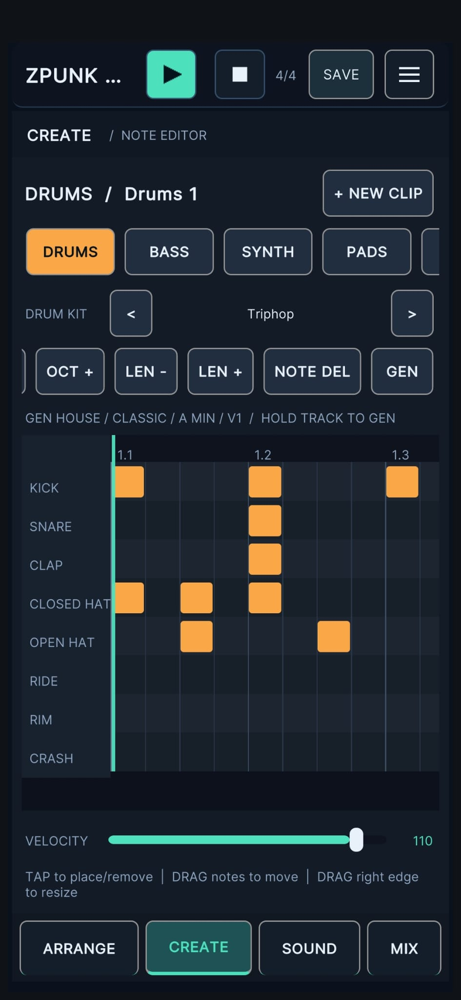
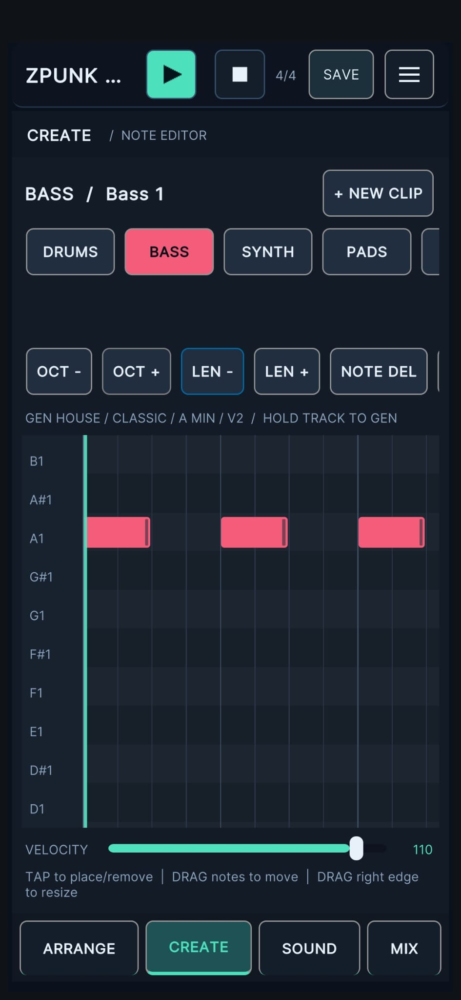
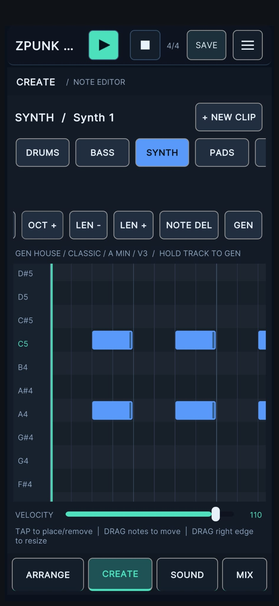
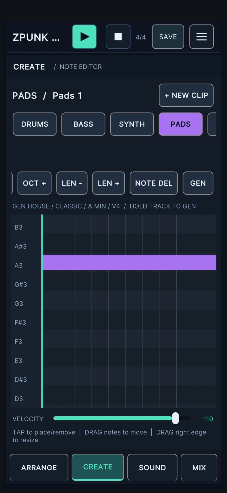
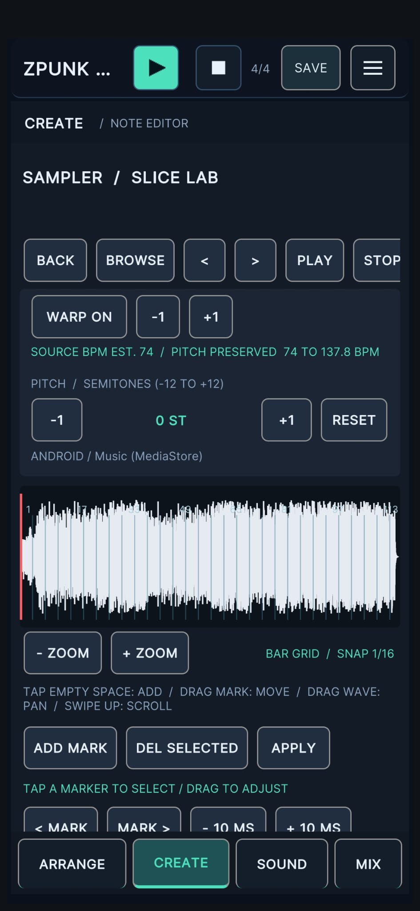
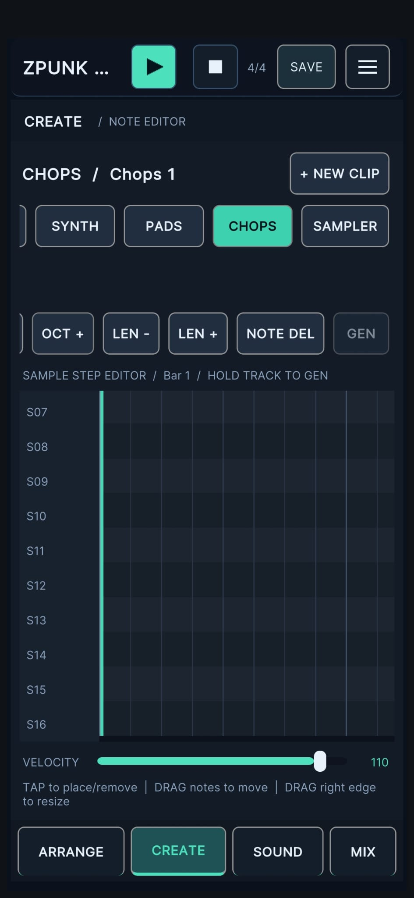
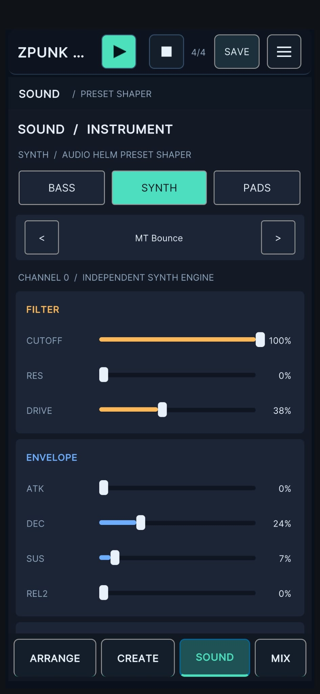
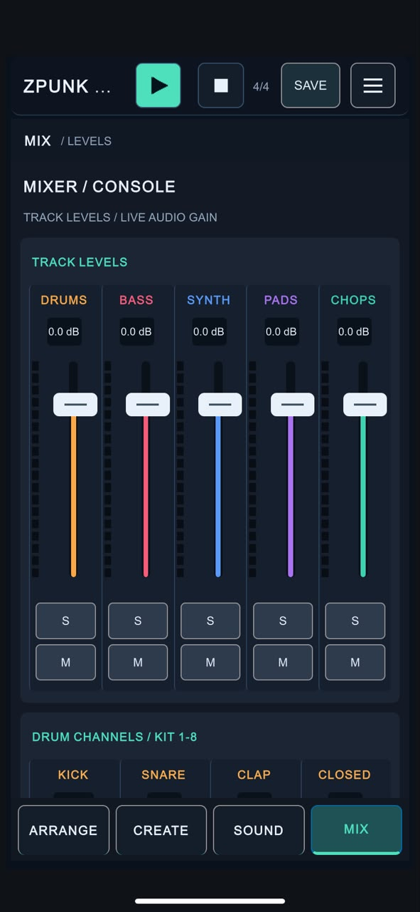

DRUMS

Sequence eight drum voices, change kits and set note velocity.
A pocket music workstation for beats, melodies, sample chops and full song ideas. Five tracks. One touch-first workflow.
Your guide to the ZPUNK 2.0 workflow.
Set your tempo and add clips to the five-track song timeline.
Write notes, generate a pattern, or sequence slices inside a clip.
Chop audio, shape your patches and balance tracks in MIX.
Save your work, export audio or MIDI, or collect everything for your desktop DAW.
Get a feel for the pocket workflow. Watch ZPUNK running on a phone, then explore the tools in the manual below.
ARRANGE is the multitrack song timeline. Place patterns across bars, adjust the song tempo, and build complete sections and variations.
Add a clip on DRUMS, BASS, SYNTH, PADS or CHOPS, then open CREATE to edit its pattern. Duplicate clips for new sections, or change their length directly in the timeline.
Arrangement concept · illustrative, not an app screenshot
Select a track and open a clip in CREATE. Tap an empty cell to add a note; tap an existing note to remove it. Drag a note to move it, or drag its right edge to resize it. Generated notes are editable the same way as manually placed notes.
Use OCT −/+, LEN −/+, NOTE DEL and the VELOCITY control to refine your part. The piano-roll timeline and note labels stay visible as you edit, and the editor focuses on the clip’s existing notes.

Sequence eight drum voices, change kits and set note velocity.

Write basslines or generate them using the shared progression and key.

Write or generate melodies, riffs and chord patterns.

Layer chords and pads using the same harmonic progression.
Tap any screenshot to view it at full size. Scroll the track selector to CHOPS and SAMPLER.
Load a sample in SAMPLER, find its rhythmic hits, place or adjust chop markers, and sequence the resulting slices in CHOPS. The Slice Lab combines manual editing with transient detection, BPM/key estimates and optional warping.

Choose a file with BROWSE, press PLAY to audition it and use the waveform to locate the sections you want. Pinch/zoom or use − ZOOM and + ZOOM for fine adjustments; FULL returns to the full-sample view.

Switch to CHOPS in CREATE and place triggers for your sample slices. Each lane plays a chop, so you can rearrange a break, vocal or melodic phrase against the other tracks.
Files → On My iPhone/iPad → zpunk → ImportedSamples (folder name and capitalization matter). On Android, make your audio available through the device’s Music/media library. WAV and MP3 are practical choices; convert FLAC files before importing.Generate editable patterns for DRUMS, BASS, SYNTH and PADS. Hold a track name in CREATE, or use GEN, to open the generator for the selected clip.
Select a genre, style, key and length (1, 2 or 4 bars), then press GENERATE. Try NEW VARIATION for another take and edit the notes directly in CREATE.
Browse and shape instrument sounds in SOUND, then use the redesigned MIX page to balance the full five-track arrangement.

Switch between BASS, SYNTH and PADS and browse the curated ZOR preset collection. Each instrument has its own sound settings.

Balance DRUMS, BASS, SYNTH, PADS and CHOPS using five live channel faders. Meters help you see the activity as the arrangement plays.
Use SAVE in the top bar before closing or switching projects. Export WAV or MIDI on its own, or use COLLECT & EXPORT to take the entire arrangement into a desktop DAW.
Keep imported samples on your device for everyday project loading. Collect & Export makes copies of referenced audio in a separate ZIP; it does not move or rename your originals.
COLLECT & EXPORT gathers your ZPUNK arrangement into a single ZIP you can transfer to a Mac or PC. It includes five synchronized WAV stems, a stereo master mix, MIDI, referenced samples and project data—ready to continue working in Ableton Live, Logic Pro, FL Studio, Reaper or another DAW.
Give the project a recognizable title and save the latest changes. The collected ZIP uses your project name; renaming does not alter the original sample files.
Run collection from ZPUNK's export workflow. The app renders the full master and each of the five tracks, then packages the files together. Keep ZPUNK open while it completes.
Save or share the archive from your device, unzip it, then import the WAV stems and MIDI into your DAW. All five stems start at the same timeline position, so they line up without manual adjustment.
Example package name and contents
Desktop DAW note: The WAV stems preserve ZPUNK's rendered audio, while MIDI lets you edit the notes with your own instruments. The included ZPUNK project data is not a native Ableton, Logic or FL Studio session file.